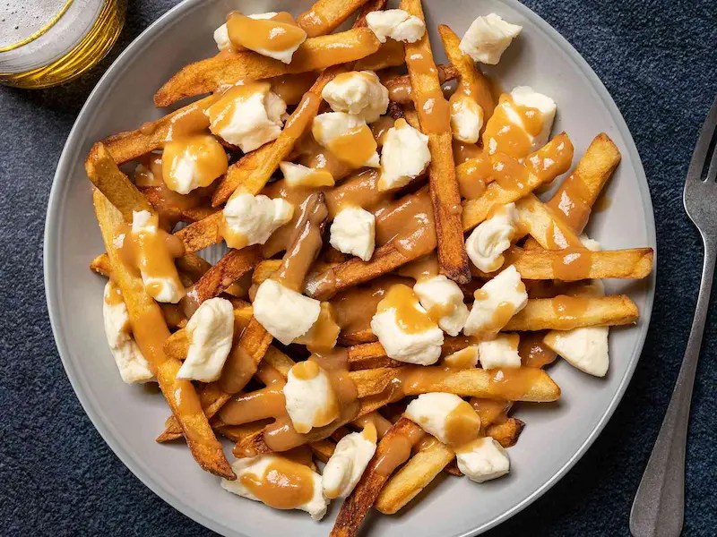
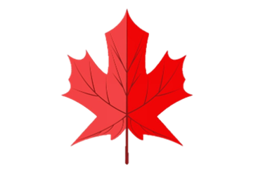
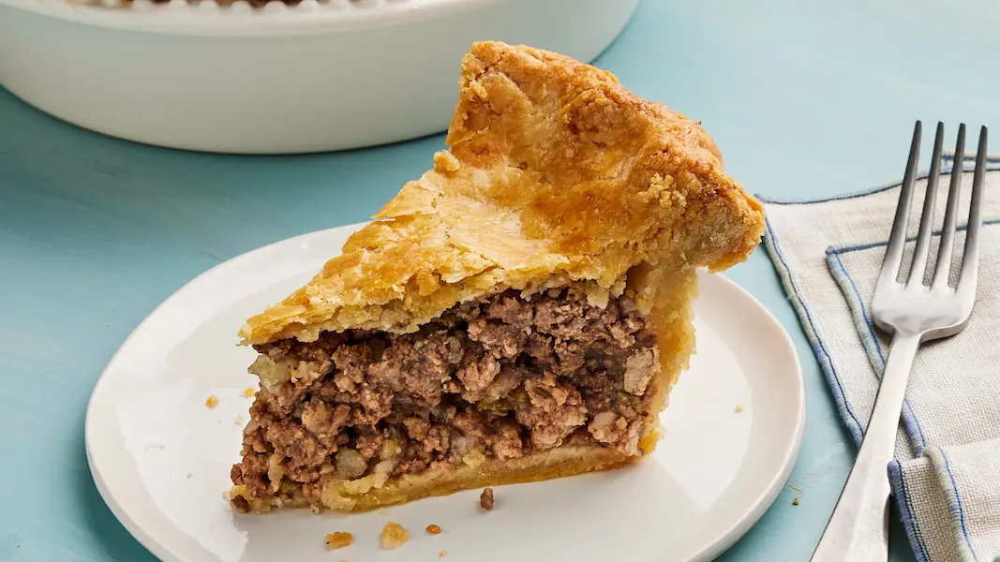
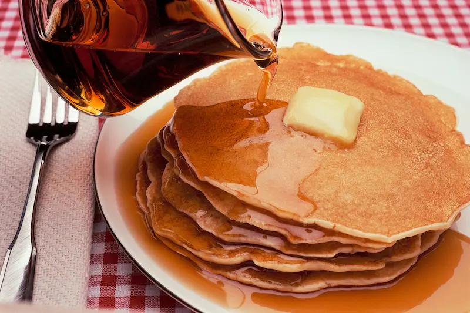
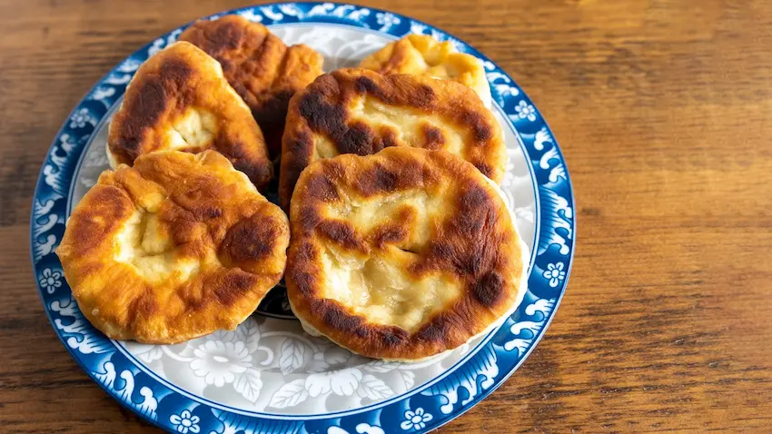
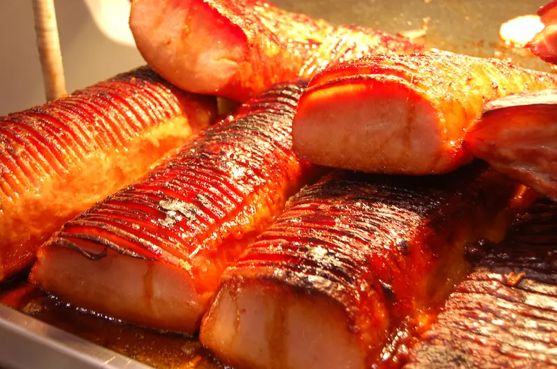
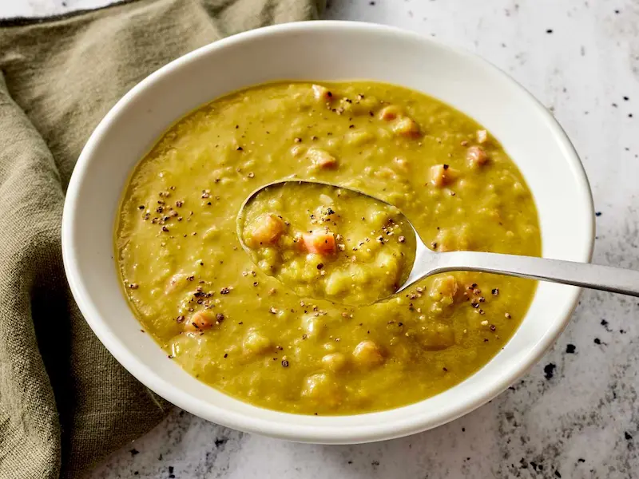

Poutine
La poutine es uno de los platos más famosos de Canadá. Consiste en papas fritas cubiertas con queso en grano y salsa gravy caliente. Es originaria de la provincia de Quebec y hoy se puede encontrar en todo el país.

Sabores reconfortantes que combinan ingredientes locales con influencias francesas e inglesas.

La poutine es uno de los platos más famosos de Canadá. Consiste en papas fritas cubiertas con queso en grano y salsa gravy caliente. Es originaria de la provincia de Quebec y hoy se puede encontrar en todo el país.

La tourtière es un pastel salado relleno de carne (generalmente cerdo o res). Es una comida tradicional de Quebec y suele prepararse especialmente en celebraciones familiares y durante la temporada navideña.

El jarabe de arce es uno de los productos más emblemáticos de Canadá. Se obtiene de la savia del árbol de arce y se usa comúnmente para acompañar panqueques, waffles y postres.

El bannock es un pan tradicional asociado a las comunidades indígenas de Canadá. Puede prepararse frito, al horno o a la parrilla. Es un alimento sencillo pero muy importante en la historia y cultura de los pueblos originarios.

El peameal bacon es un tipo de tocino curado y cubierto con harina de maíz. Es muy popular en la ciudad de Toronto y suele servirse en sándwiches. Es considerado uno de los alimentos más característicos de la gastronomía canadiense.

La split pea soup (sopa de guisantes partidos) es una sopa muy tradicional de la cocina franco-canadiense, especialmente en Quebec. Se prepara con guisantes secos, cerdo o jamón y verduras. Es una comida caliente y reconfortante, muy común durante el invierno.
Descubre los mejores lugares para saborear la auténtica cocina canadiense.
Internacional, Canadiense.
📍 130 King St, London, Ontario N6A 1C5 Canadá
📞 +1 519-850-8666
Apto para vegetarianos, acepta tarjetas de crédito.
📍 1255 Rue Bishop, Montreal, Quebec H3G 2E2 Canadá
📞 +1 514-392-7777
Japonesa, Sushi, Asiática, Tailandesa.
📍 1568 Rue de la Faune, Quebec, Quebec G3E 1L2 Canadá
📞 +1 418-915-8023
2 estrellas MICHELIN, Canadiense.
📍 7 Rue du Don-de-Dieu, Québec, QC, Quebec, Quebec G1K 3Z6 Canadá
📞 +1 418-872-4386
Francesa, Café, Canadiense.
📍 23 Rue Notre Dame, Quebec, Quebec G1K 4E9 Canadá
📞 +1 581-742-6777
Francesa, Gastropub.
📍 4323 Rue Ontario E, Montreal, Quebec H1V 1K5 Canadá
📞 +1 514-254-3838
Francesa, Canadiense.
📍 1027 3E Ave, Quebec, Quebec G1L 2X3 Canadá
📞 +1 418-914-8780
Apto para vegetarianos, Desayuno, Almuerzo, Brunch.
📍 460 Egerton St, London, Ontario N5W 3Z5 Canadá
📞 +1 519-951-9333
Italiana, Francesa, Mariscos, Europea, Contemporánea.
📍 257, Rue Prince, Montreal, Quebec H3C 2N4 Canadá
📞 +1 514-316-4666